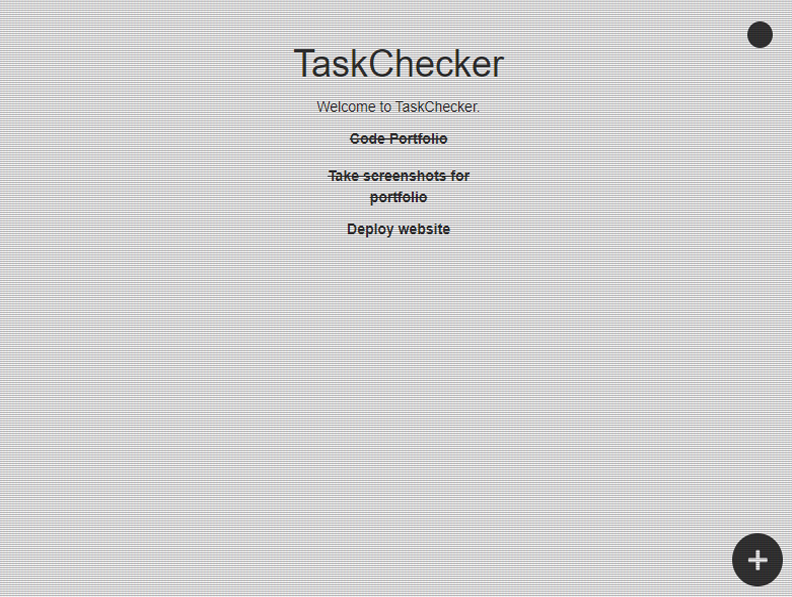
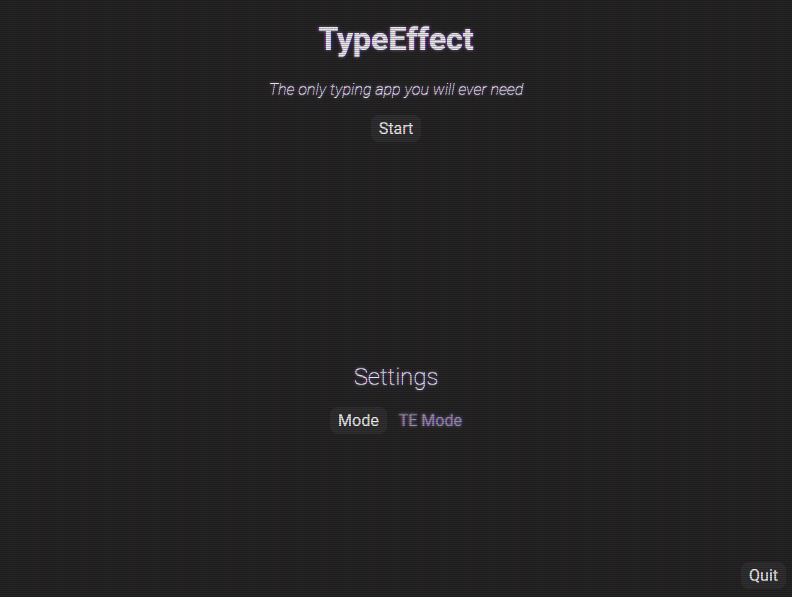

Works

A simple desktop app to track your daily tasks. Made using Node, Electron and (HTML, CSS and JS).

A desktop app that tracks your typing speed in words per minute using different modes of typing. Made using Node, Electron and (HTML, CSS and JS).